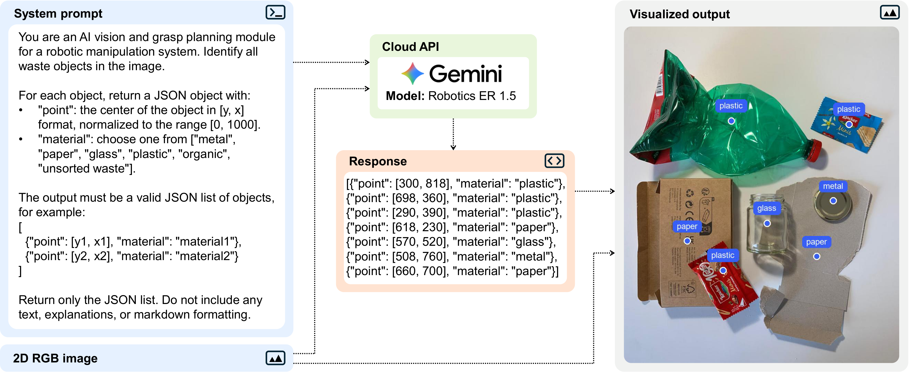
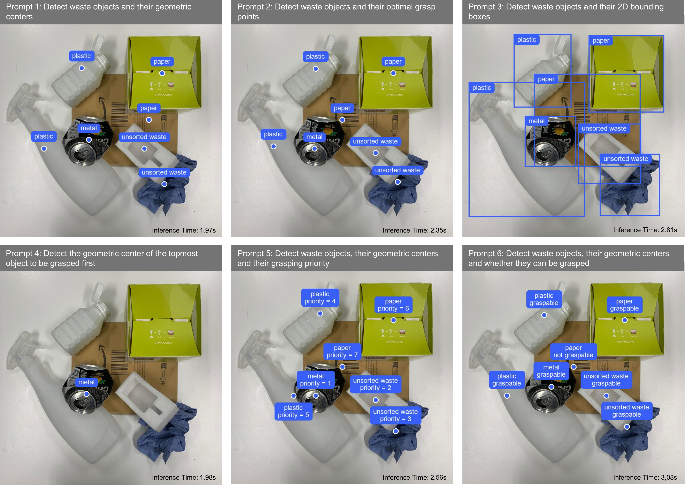
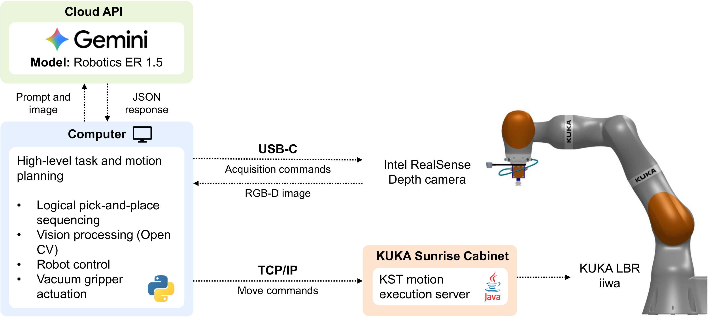
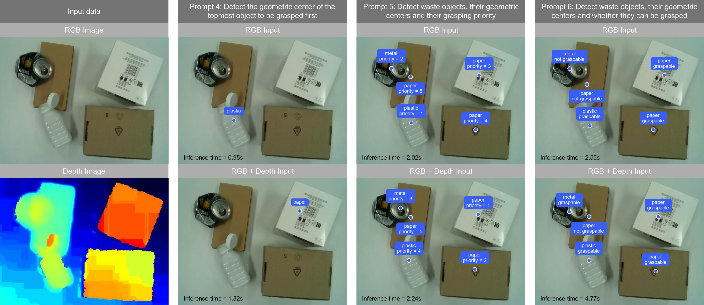

Robotic waste sorting with Vision-Language-Action models
Robotic waste sorting is a challenging task, requiring advanced perception and manipulation capabilities for diverse, unstructured waste items. Our research introduces a novel zero-shot robotic waste sorting system powered by Vision-Language-Action (VLA) models.
VLAs are pre-trained on vast multimodal datasets (text, images, robot actions), enabling them to perform complex tasks without task-specific training or time-consuming data collection and labeling. Our system interacts with the VLA via an API call, providing an image and a natural language 'prompt.' The VLA then processes this input and returns a structured JSON response, detailing object information and action plans.

Figure 1: Overview of the information workflow between the system prompt, the RGB image, and
the AI model
We designed six distinct prompt types to guide the VLA's intelligence for waste sorting:
Prompt 1 (basic classification): identifies waste objects and their geometric centers;
Prompt 4 (topmost object): identifies the topmost object in cluttered scenes (the one that should be grasped first);
Prompt 5 (grasping priority): establishes a complete picking priority based on spatial arrangement.
Prompt 6 (graspable vs. ungraspable): distinguishes between graspable and ungraspable (occluded) items.

Figure 2: Visualized outputs generated by the model for the six prompts applied to the
same input image, with the corresponding inference time (bottom left corner)
Robotic workcell and system integration
Our zero-shot waste sorting system is implemented on a 7 DOF KUKA LBR iiwa collaborative robot, equipped with a pneumatic vacuum gripper and Intel RealSense RGB-D camera. This sensor provides both color (RGB) and depth information, which enables the system to accurately perceive object heights, identify overlapping items, and make informed grasping decisions in cluttered scenes. The entire robotic workcell is controlled via an external computer using Python: this setup enables seamless communication between the VLA model (accessed through its cloud API), the RGB-D camera, and the KUKA robot's control system.

Figure 3: Robotic system setup and data communication workflow.
System performance
Our experiments demonstrate robust perception and efficient performance for zero-shot robotic waste sorting:
Inference time between 2 to 4 seconds, varying with prompt complexity and level of clutter, which is suitable for collaborative robotics applications;
High overall classification accuracy (89.64%), with usorted waste being the most difficult type of waste to correctly classify;
The incorporation of depth images significantly improves the VLA's spatial awareness, as it allows the system to accurately perceive object heights, resolve occlusions, and make informed grasping decisions in heavily cluttered environments while not significantly increasing the system's inference time.

Figure 4: Comparison of the VLA model's output using standard 2D RGB input versus combined RGB-D input across prompts 4-6.
Real-world grasping strategies
We designed and validated multiple grasping strategies to handle different levels of clutter:
Strategy 1: Single API call for non-cluttered scenes (high efficiency);
@misc{Sinico2026,
title={Integrating Vision-Language-Action Models and RGB-D Sensing for Robotic Waste Sorting on KUKA LBR iiwa},
author={Teresa Sinico, Daniele Businaro and Giovanni Boschetti},
year={2026},
eprint={},
archivePrefix={},
primaryClass={},
url={},
}